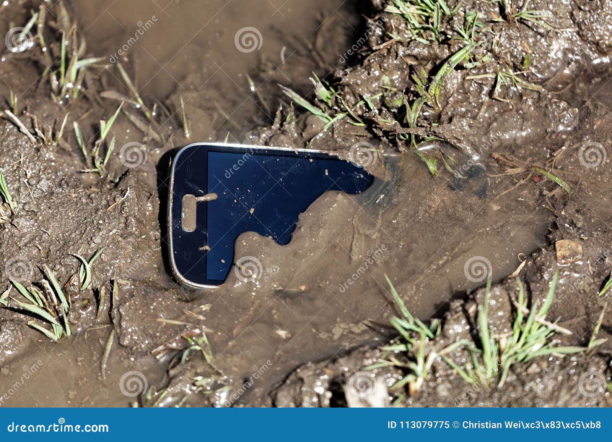

13.02.2025.
Комманда Airoha отправилась на болото "Тереза" в Чернобыле чтобы найти новый лучший элемент для новой модели телефона. Было найдено необычное вещество, похожее на артефакт. В конечном итоге наша комманда начала работу над разработкой телефона Airoha Debilism, фишкой которого будет заражение человека раком.
10.02.2025.
Комманда Airoha представляет вам своё новое изобретение - Airoha Pashalk 0. Невероятная производительность, впечатляющая история, а также устойчивость к говну! Если случайно уронить телефон в унитаз, он не просто не утонет, а усилится и по производительности не будет уступать даже телефонам Nasa. В первое время телефон будет продаваться с отличной скидкой.

6.02.2025.
Сегодня мы снова доказали, что для нас нет ничего невозможного! Команда Airoha решила не ограничиваться планетой "Земля" и поэтому с помощью TNT-пушки удалось запустить в далекий космос трех добровольцев. Они долго летали по космосу, успели колонизировать Марс (возможно в будущем будет новый телефон, сделанный из составляющих Марса)